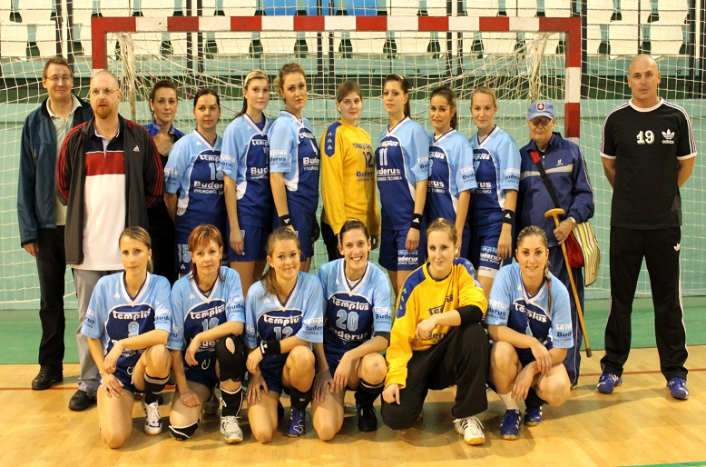

S hádzanou som sa stretla nečakane. Vo štvrtom ročníku na základke sa robili talentové skúšky pre rôzne športy. Tí čo ma poznajú, nebudú prekvapený že som bola chorá :) Kamarátka uspela a rozhodla sa pre hádzanú na Krčméryho škole v Nitre. Keďže som nevedela kam na druhý stupeň, rozhodla som sa prečo nie? Presvedčila som mamču a zašli sme za trénerkou, ktorá mala na starosti výber. Pozrela na mňa a bez otázok povedala dobre. Tak som po lete nastúpila do športovej triedy.
Nebolo to jednoduché, ale hádzaná ma bavila. Približne po pol roku mi trénerka navrhla či nechcem vyskúšať post brankárky, vraj ma sledovala a mala som dobré reflexy a nebála som sa lopty. Prečo by som nevyskúšala? Od tej doby si ani neviem predstaviť, že by som hrala iný post. Výhodou je že sa menej nabehám, ale sa namakám v iných oblastiach. Tých svalovíc čo som prekonala...
Často sa mi stalo, že som hrávala za viac kategórií. Dva roky som dokonca hrala za tri kategórie - mladšie a staršie dorastenky a ženy. Ale to som musela mať povolenie od športového lekára. Náš tím bol v žiackych a dorasteneckých kategóriách veľmi úspešný. Mám doma niekoľko medailí za 1. a 2. miesta z Majstrovstiev SR. Dokonca individuálne mám niekoľko ocenení za najlepšiu brankárku :) Bola som niekoľkokrát pozvaná aj do reprezentačného výberu, no tam už zaúradovali zranenia....
Za ženy hrávam už niekoľko rokov a je to ako droga. Teraz síce nehrám aktívne kvôli nedostatku času, no už končím školu a mením prácu, takže v ďalšej sezóne budem rozhodne hrávať. Často ak stíham, idem sa pozrieť aspoň na koniec tréningu a ak mám v sobotu voľno, chodím sa pozerať na zápasy.
 Ja a môj tím.Hádzanej sa nemienim vzdať a budem hrávať kým budem môcť, no nie je to len o hádzanej. Je to najmä o ľuďoch, ktorých stretnete. Ľudia z môjho tímu nie sú len spoluhráčí, tréneri a vedúci, sú to priatelia, často takmer rodina. Stretávame sa pravidelne mimo hádzanej, chodíme na chaty, dovolenky, ....